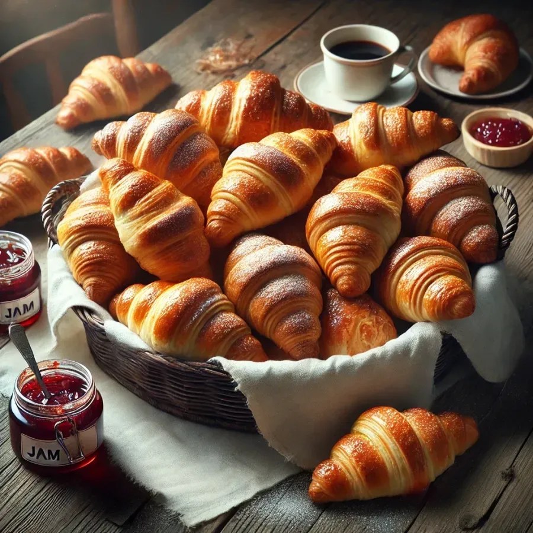
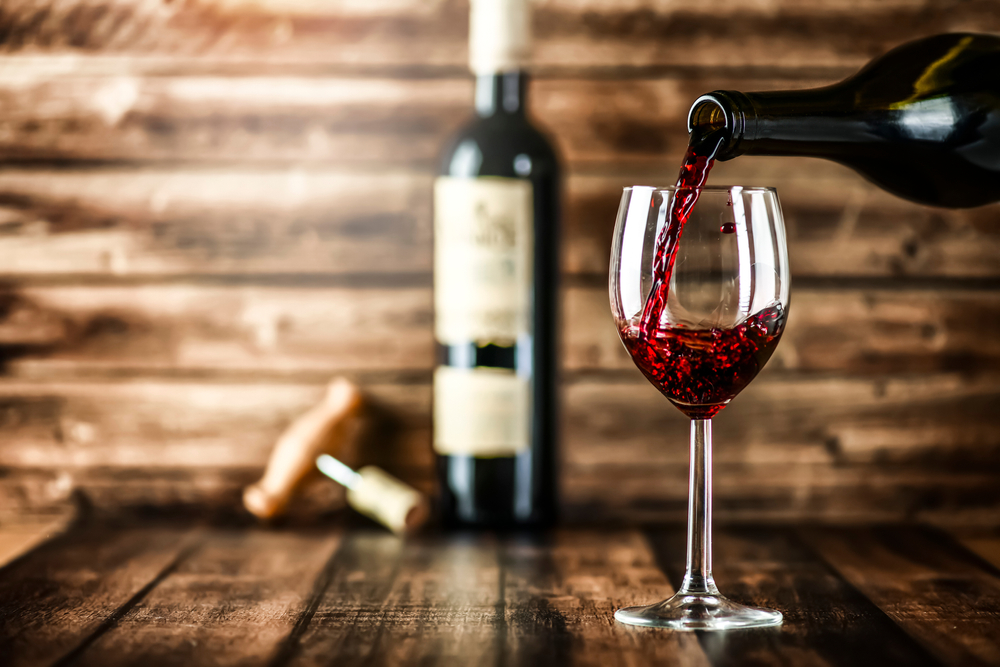

Bucătăria franceză
Cruasante
Croissantele sunt o specialitate de patiserie franceză, apreciate pentru
textura lor fragedă și stratificată, fiind adesea servite la micul dejun
alături de cafea sau ciocolată caldă.

Vinurile
Vinurile franceze sunt renumite în întreaga lume pentru calitatea și diversitatea
lor, cele mai faimoase regiuni viticole fiind Bordeaux, Burgundia, Champagne și Valea
Loarei.
